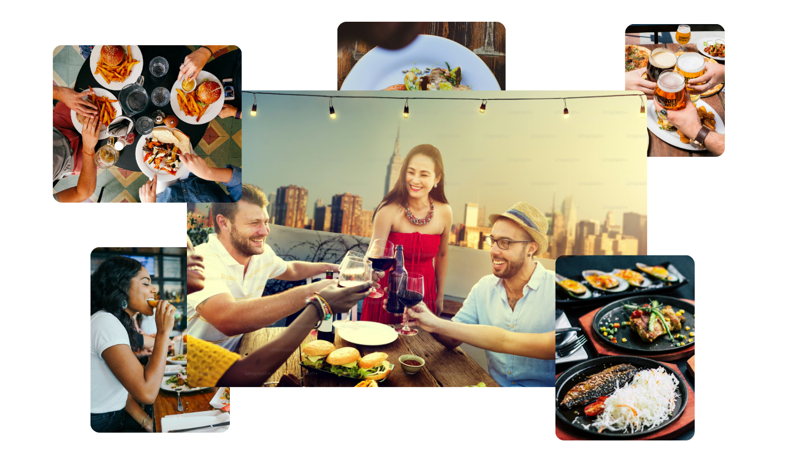

TableFinder is designed for a wide range of users, including families looking for comfortable dining experiences, couples searching for romantic restaurants, professionals organising business lunches or meetings, and tourists wanting to explore local food and popular dining spots. The platform provides an easy and convenient way for users to discover restaurants, receive personalised recommendations, and make reservations based on their preferences and needs.
Discover the perfect dining experience
Don't know where to eat? Don't worry, we got you covered.
Find a Restaurant
Welcome To TableFinder
TableFinder is a restaurant discovery and reservation platform for people who like good food and easy booking. We assist you in discovering the ideal dining spot for a family dinner, a romantic date, or a business lunch. The convenience, variety, accessibility and a great dining experience. We link eaters with neighbourhood restaurants so you can browse menus, get tailored suggestions, and book a table with a small deposit.